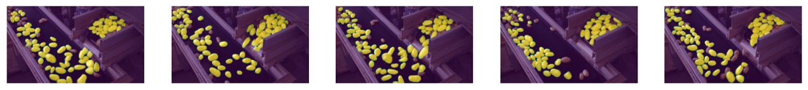

Visual Prompting (Zero-shot learning)#
Visual prompting is a computer vision task that uses a combination of an image and prompts, such as texts, bounding boxes, points, and so on to troubleshoot problems. Using these useful prompts, the main purpose of this task is to obtain labels from unlabeled datasets, and to use generated label information on particular domains or to develop a new model with the generated information.
This section examines the solutions for visual prompting offered by the OpenVINO Training Extensions library.
Segment Anything (SAM), is one of the most famous visual prompting methods and this model will be used to adapt a new dataset domain.
Especially, in this section, we try to automatically predict given images without any training, called as zero-shot learning.
Unlike fine-tuning, zero-shot learning needs only pre-processing component.
Pre-processing: Resize an image according to the longest axis and pad the rest with zero.
Note
Currently, zero-shot learning with SAM with bounding boxes in the OpenVINO Training Extensions is only supported. We will support zero-shot learning with other prompts (points and texts) in the near future.
Note
Currently, Post-Training Quantization (PTQ) for SAM is only supported, not Quantization Aware Training (QAT).
Dataset Format#
For the dataset handling inside OpenVINO™ Training Extensions, we use Dataset Management Framework (Datumaro).
We support three dataset formats for visual prompting:
Common Semantic Segmentation for semantic segmentation
COCO for instance segmentation
Pascal VOC for instance segmentation and semantic segmentation
Models#
We support the following model templates in experimental phase:
Template ID |
Name |
Complexity (GFLOPs) |
Model size (MB) |
|---|---|---|---|
Zero_Shot_SAM_Tiny_ViT |
38.18 |
25 |
Simple tutorial#
There are two steps for zero-shot inference: learn and infer.
Learn is to extracet reference features from given reference images and prompts. These extracted reference features will be used to get point candidates on given target images.
Extracted reference features will be saved in the model checkpoint (such as weight.pth) with the model.
You can do learn with the following source code:
(otx) ...$ otx train --config <model_config_path> \
--data_root <path_to_data_root>
Infer is to get predicted masks on given target images. Unlike learn, this stage doesn’t need any prompt information.
(otx) ...$ otx test --config <model_config_path> \
--data_root <path_to_data_root> \
--checkpoint <path_to_weights_from_learn>
For example, when the positive (green) and the negative (red) points were given with the reference image for learn stage, you can get basic SAM prediction result (left).
If you give the same reference image as the target image for infer stage, you can get target prediction results (right).
You can get target prediction results for other given images like below.
